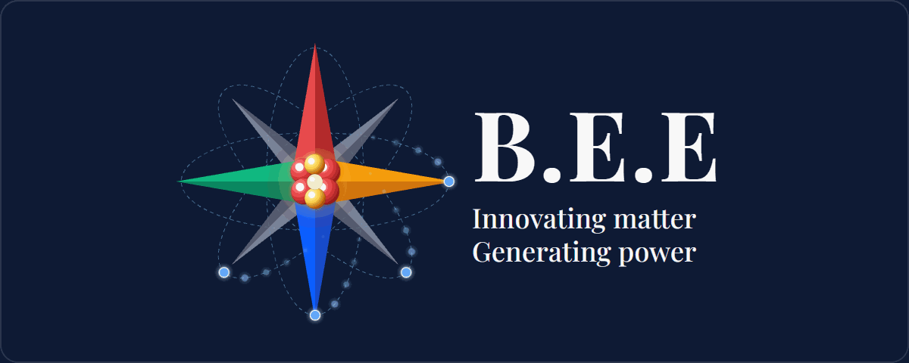
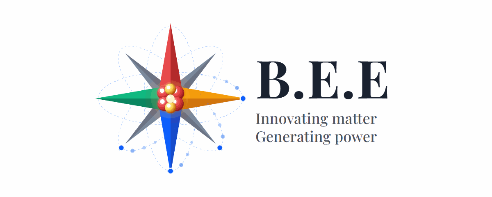

חקירת מאגר · Inventory Report
דוח מפורט של כל תוכן התיקייה הנוכחית (/workspace · ענף main), כולל מטא־דאטה של קבצים, מבנה Git, ותמונת מצב של ענפים מרוחקים במאגר.
המאגר bee-assets בענף main הוא מאגר נכסים ציבוריים של מותג B.E.E. — לוגו/כרטיס חתימה למייל ולשימוש חיצוני. התוכן על main מינימלי וממוקד:
מטרה נכסים ציבוריים לחתימות אימייל ושימוש חיצוני — לפי README.
הקשר עסקי B.E.E. הוא מותג/עסק של Barak Barzel בתחום אנרגיה סולארית וחשמל בישראל (מה שנלמד מענף המחקר במאגר). הסלוגן על הלוגו: Innovating matter · Generating power.
מבנה התיקייה לאחר סריקה מלאה (ללא .git):
| קובץ | סוג | גודל | תפקיד |
|---|---|---|---|
| README.md | Markdown / טקסט | 75 בתים | תיאור קצר של המאגר |
| bee-signature-card-dark.gif | GIF89a מונפש | 2,786,724 בתים (2.66 MB) | כרטיס חתימה — גרסת רקע כהה |
| bee-signature-card-light.gif | GIF89a מונפש | 2,256,998 בתים (2.15 MB) | כרטיס חתימה — גרסת רקע בהיר |
הערה אין תיקיות משנה, אין קוד מקור, אין package.json / CI / תלויות בענף הנוכחי.
תוכן מלא (2 שורות):
| שדה | ערך |
|---|---|
| כותרת | B.E.E Public Assets |
| תיאור | Public assets for email signatures and external use. |
| קידוד | ASCII text |
| MD5 | 9ba3f10bd09a3fd4261f756cc5320dcd |
| SHA-256 | 78d833a5938e0c970b756c0d284dafae1d383731fd6546f707b16ee83a598bf4 |
שני הקבצים הם לוגואים מונפשים בפורמט GIF לשימוש ככרטיס חתימה (signature card). העיצוב זהה בתוכן הגרפי והטקסט; ההבדל הוא רקע כהה מול רקע בהיר.
| מאפיין | ערך |
|---|---|
| פורמט | GIF89a |
| מימדים | 1200 × 480 פיקסלים (יחס ~2.5:1, באנר אופקי) |
| טבלת צבעים גלובלית | כן · 256 צבעים · עומק צבע 8 ביט |
| מספר פריימים | 110 בכל קובץ |
| משך פריים | 5 centiseconds (≈ 50ms) לפריים |
| משך לולאה משוער | ≈ 5.5 שניות (110 × 50ms) |
| טקסט על הלוגו | B.E.E. · Innovating matter · Generating power |
| אייקון | מצפן/כוכב 8 קודקודים + גרעין אטומי + מסלולי אלקטרונים |
| צבעי קודקודי המצפן | צפון אדום · מזרח כתום · דרום כחול · מערב ירוק |
| שדה | ערך |
|---|---|
| רקע | כחול-נייבי כהה |
| טקסט | לבן |
| גודל | 2,786,724 בתים (2.66 MB) |
| MD5 | 358e303160fdf5355b4d7bf01e0caabd |
| SHA-256 | 186d4a7c6a425360d8aa2b1bf96fecfbb75c608a45e84645773b6cfba242c89c |
| שימוש מומלץ | חתימות / רקעים כהים, תבניות מייל כהות |
| שדה | ערך |
|---|---|
| רקע | לבן |
| טקסט | שחור |
| גודל | 2,256,998 בתים (2.15 MB) |
| MD5 | 666c539b69ac407c3927aa8e03ebaffb |
| SHA-256 | 6591be82c6977f3b648a64bd58504ec6d135416de174f5b5f569792b4c9bae05 |
| שימוש מומלץ | חתימות / רקעים בהירים, מסמכים לבנים |
הערה טכנית גודל הקבצים (~2–2.7 MB) גבוה יחסית לחתימת מייל טיפוסית. חלק מלקוחות מייל חוסמים או מדחסים GIF כבדים — כדאי לשקול גרסת PNG סטטית או GIF דחוס יותר לשימוש יומיומי.


| שדה | ערך |
|---|---|
| Remote | github.com/Barak-B/bee-assets |
| ענף נוכחי (בסריקה) | main (מסונכרן עם origin/main) |
| קומיטים בענף main | 1 |
| קומיט HEAD | 1cd12fb490f80d11955515ff07577cf9d33f3c40 — Add B.E.E signature logos |
| מחבר | Barak Barzel <barak-barzel@barak-e.com> |
| תאריך קומיט | Thu May 7 02:56:21 2026 +0300 |
| קבצים בקומיט | README.md + שני קבצי GIF |
| מצב working tree | נקי בעת תחילת הסריקה |
הערה: ה־hash המלא של HEAD הוא 1cd12fb490f80d11955515ff07577cf9d33f3c40.
בנוסף ל־main, במאגר קיימים שני ענפי עבודה מרוחקים עם תוכן משמעותי. הם אינם חלק מעץ הקבצים של הענף הנוכחי, אך הם חלק מהמאגר כולו.
~224 קבצים ~86 קומיטים ענף מחקר/תפעול עשיר של פרויקט BEE — תיעוד, LLD, reference code, knowledge base, ומפות HTML אינטראקטיביות.
התפלגות סוגי קבצים (משוערת לפי סיומות):
| סיומת | כמות | הערות |
|---|---|---|
| .md | 88 | תיעוד, LLD, תוכניות |
| .js | 29 | סקריפטים / reference |
| .ts | 22 | TypeScript (phase-a) |
| .txt | 19 | snapshots של local-state |
| .json | 17 | קונפיגים / גרפים |
| .sh | 10 | סקריפטי פריסה |
| .html | 9 | מפות ויזואליות |
| .ps1 | 4 | התקנה ל־Windows |
| אחר | ~26 | yaml, sql, prisma, gif, mjs… |
4 קבצים כולל את נכסי main + קובץ אחד נוסף:
קובץ HTML זה נשמר ב־ reports/folder-inventory.html ומציג את כל המידע שנאסף בסריקה.